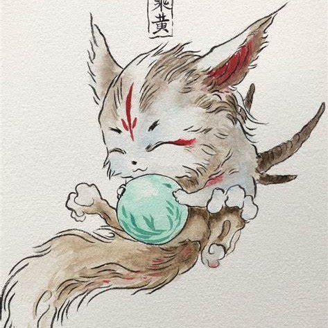
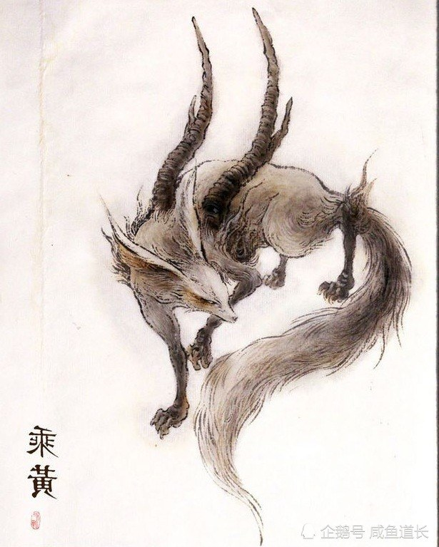
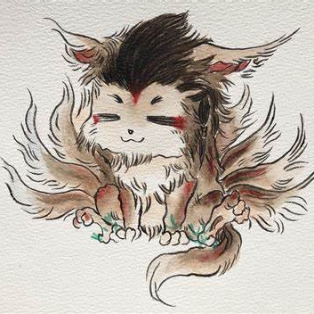
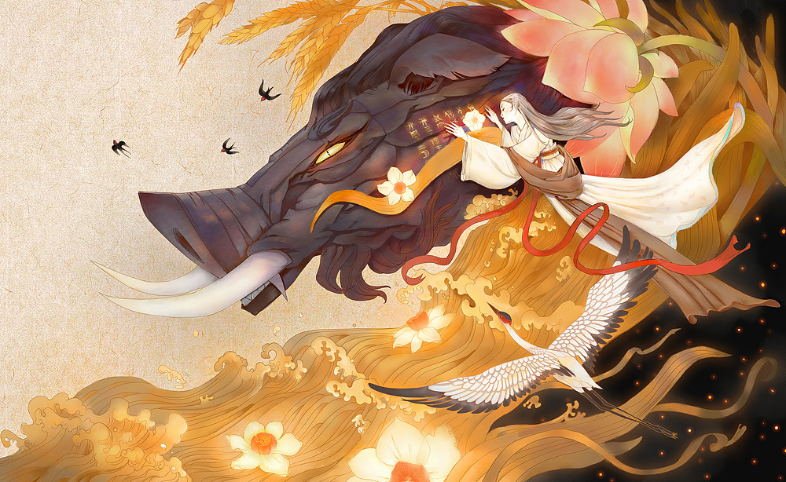
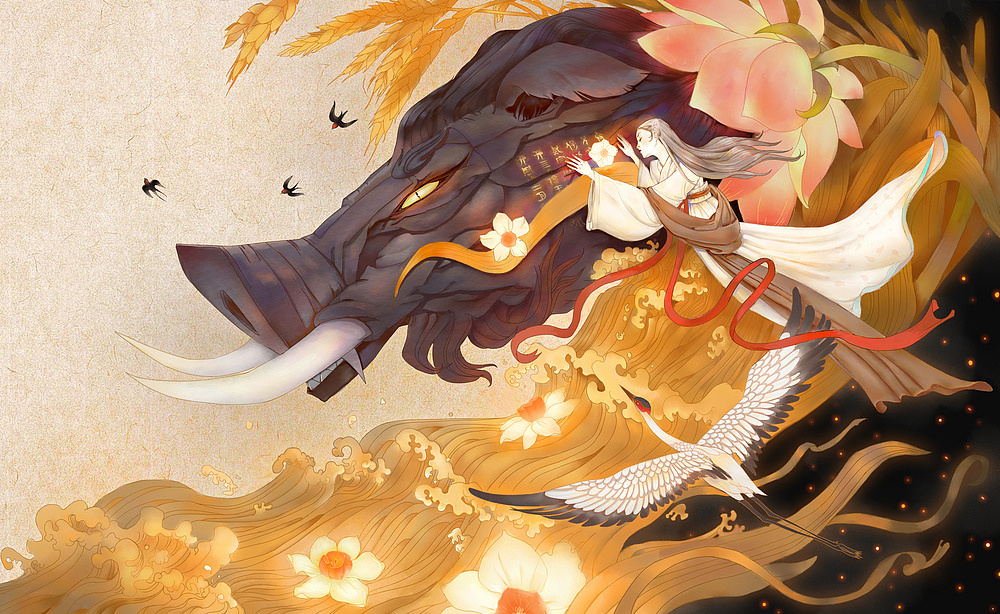
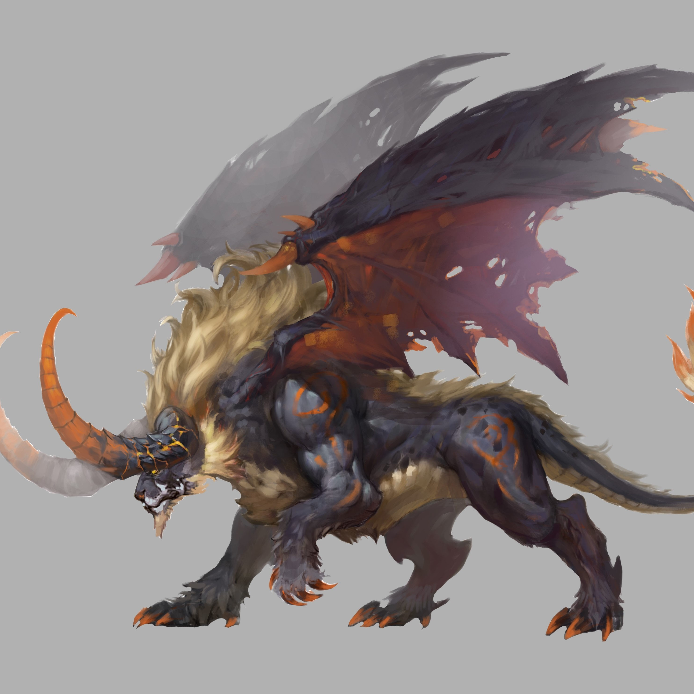
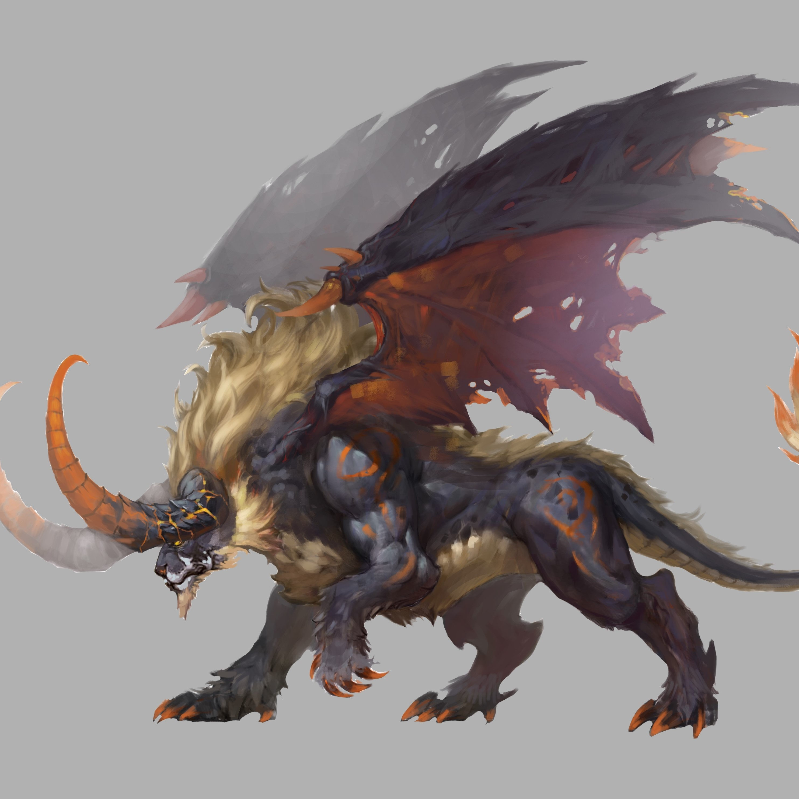
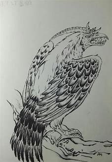
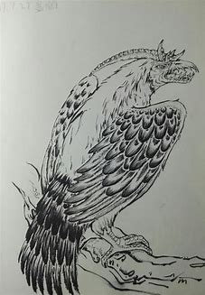

 
乘黄：
【原文】《山海经·海外西经》：“白民之国在龙鱼北，白身披发。有乘黄，其状如狐，其背上有角，乘之寿二千岁。”【相关神话】由于乘黄的皮毛是黄色的，古人还管它叫飞黄、腾黄、神黄。其中的飞黄与词语飞黄腾达有着密不可分的关系。由于乘黄有着让骑它的人增加寿命的能力，因此，不知从何时起，古人认为乘黄是一只神驹。又因为乘黄也叫飞黄，所以，古人直接将飞黄看作一只神驹。飞黄腾达原指神马飞驰腾空，后用来比喻一个人骤然得志，官职、地位上升得很快。
陆吾：
【原文】《山海经·西次三经》：“昆仑之丘，是实惟帝之下都。神陆吾司之。”【相关神话】陆吾又被称作开明兽，本是黄帝都城昆仑丘的守卫，他把自己化装成老虎的样子，这样便可以获得老虎的威严和力量。只是不知为何会出现在蜀山的神龙殿之中，而且似乎忘记了原本的职责，只知道单纯的阻挡一切进入神龙殿的人。陆吾神掌管这“帝之下都”还兼管“天之九部”。



 

当康：
【原文】有牙的小猪状，因叫声而得名。可以预见丰年。【相关神话】上古瑞兽，其形如猪，身长六尺，高四尺，浑身青色，两只大耳，口中伸出四个长牙，如象牙一般，抱在外面。传说在丰收的年岁里他会鸣叫着自己的名字跳着舞出现。听到他的叫声，就预示着丰年到来。
穷奇：
【原文】邽山，其上有兽焉，其状如牛，猬毛，名曰穷奇，音如嗥狗，是食人。【译文】邽山，山上有一种野兽，形状像一般的牛，但全身长着刺猬毛，名称是穷奇，发出的声音如同狗叫，吃人。
【相关神话】上古异兽之四大凶兽之一，中国传说中抑善扬恶的恶神，它的大小如牛、外形象虎、披有刺猬的毛皮、长有翅膀，穷奇的叫声象狗，靠吃人为生。据说穷奇经常飞到打架的现场，将有理的一方鼻子咬掉；如果有人犯下恶行，穷奇会捕捉野兽送给他，并且鼓励他多做坏事。
 



 
